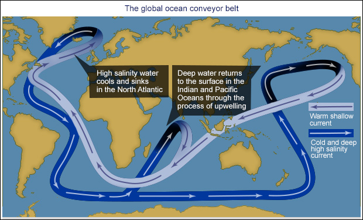
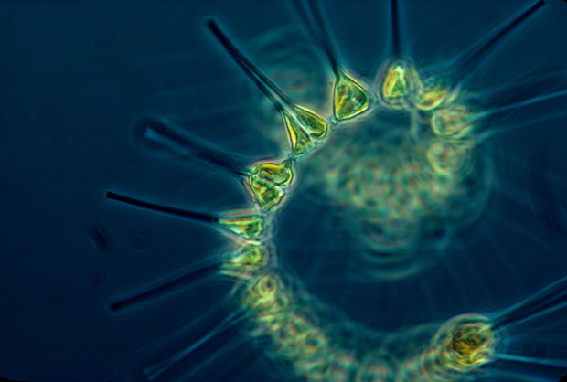

- Earth's oceans are unique in the Universe — as far as we know.
- For every species of marine life we know of, at least another three are yet to be discovered.
- Water takes around 1000 years to travel all the way around the whole globe.
- Half of all the oxygen we breathe is produced in the ocean.
- The oceans may seem vast, but they're small compared to the overall size of our planet.
- Oceans hold around 50 times more carbon than the atmosphere.
- The Atlantic Ocean is getting bigger and the Pacific Ocean is getting smaller.



